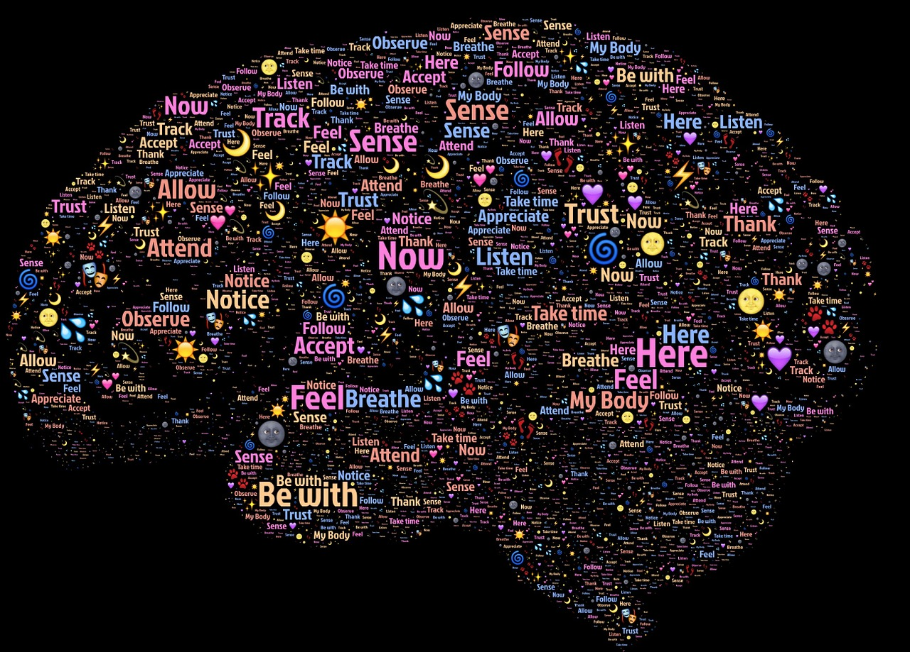

Oren Bochman’s Blog
About
Neural Networks for Machine Learning
Model Thinking
XAI
rl
rhetoric
TFP
AB testing
cognitive AI
Source Code
Report a Bug
Archive
Cognitive AI
Order By
Default
Date - Oldest
Date - Newest
Title
Lesson 26 Wrap-Up
Oren Bochman
Feb 20, 2016
Lesson 25 Advanced Topics
Oren Bochman
Feb 19, 2016
Lesson 24 Meta-Reasoning
Oren Bochman
Feb 18, 2016
Lesson 23 Learning by Correcting Mistakes
Oren Bochman
Feb 17, 2016
Lesson 22 Diagnosis
Oren Bochman
Feb 16, 2016
Lesson 21 Configuration
Oren Bochman
Feb 15, 2016
Lesson 20 Constraint Propagation
Oren Bochman
Feb 14, 2016
Lesson 19 Version Spaces
Oren Bochman
Feb 13, 2016
Lesson 18 Analogical Reasoning
Oren Bochman
Feb 12, 2016
Lesson 17 Explanation-Based Learning
Oren Bochman
Feb 11, 2016
Lesson 16 Scripts
Oren Bochman
Feb 10, 2016
Lesson 15 Commonsense Reasoning
Oren Bochman
Feb 9, 2016
Lesson 14 Understanding
Oren Bochman
Feb 8, 2016
Lesson 13 Planning
Oren Bochman
Feb 7, 2016
Lesson 12 Logic
Oren Bochman
Feb 6, 2016
Lesson 11 Classification
Oren Bochman
Feb 5, 2016
Lesson 10 Incremental Concept Learning
Oren Bochman
Feb 4, 2016
Lesson 09 Case-Based Reasoning
Oren Bochman
Feb 3, 2016
Lesson 08 Learning by Recording Cases
Oren Bochman
Feb 2, 2016

Lesson 07 Frames
Oren Bochman
Feb 1, 2016
Lesson 06 Production Systems
Oren Bochman
Jan 30, 2016
05 - Means-End Analysis
Oren Bochman
Jan 29, 2016
Lesson 04 Generate & Test
Oren Bochman
Jan 26, 2016
Lesson 03 Semantic Networks
Oren Bochman
Jan 25, 2016
Lesson 02 Introduction to CS7637
Oren Bochman
`Jan 24, 2016`{=html}
01 - Introduction to Knowledge-Based AI
Oren Bochman
Jan 23, 2016
01 - Course Material
Oren Bochman
Jan 20, 2016
No matching items